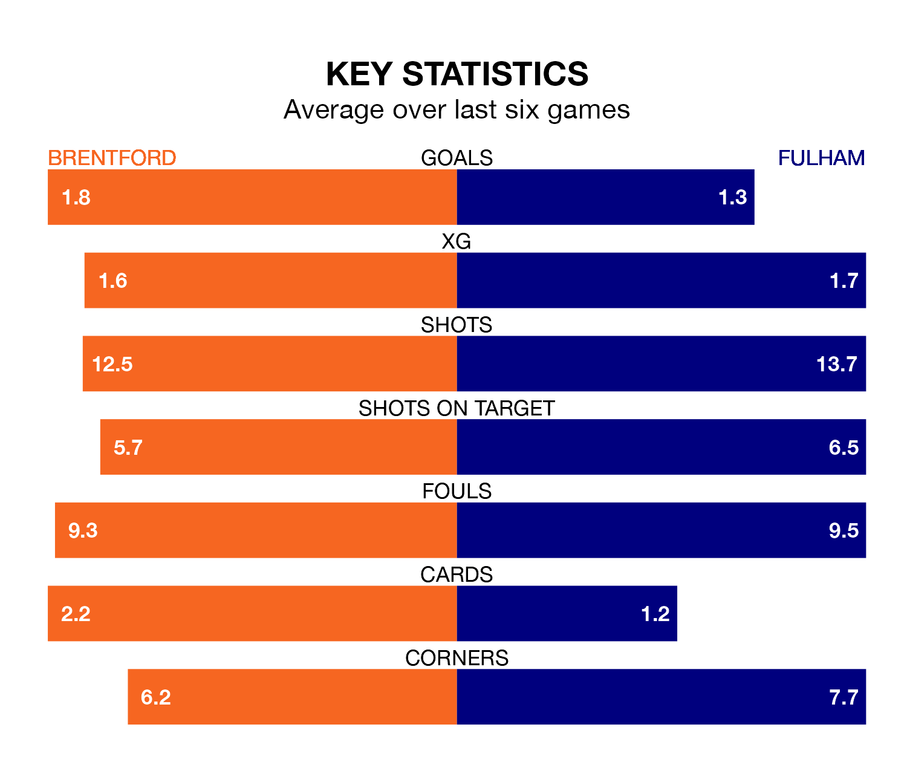

Brentford host Fulham on Saturday at the Gtech Community Stadium in the Premier League.
In their last league match, on April 27, Brentford lost to Everton 1-0 away.
Fulham drew, 1-1 at home against Crystal Palace, with Rodrigo Muniz scoring their goals.
In the last 10 years, Brentford and Fulham have played each other on 17 occasions. Brentford won nine of them, Fulham five, and they drew three times.
On average, the Bees scored 1.9 goals and the Cottagers 1.2 in those matches.
Their last meeting was on August 19, when Brentford won 3-0 away.
With 51 goals in 35 games so far this season, Fulham are scoring at below the league average rate with 1.5 goals per game. And they are conceding at an average rate, letting in 55 goals at a rate of 1.6 per game.
Brentford are also below average scorers, with 1.5 goals per game, compared to a league average of 1.6. They have conceded 1.7 goals per game.
With Bernd Leno between the sticks, the Cottagers can rely on one of the league's safest pair of hands. He has kept nine clean sheets in his 35 appearances this season in the Premier League.
In the Bees's net, Mark Flekken has six clean sheets in 34 games. He has conceded a goal every 54 minutes, 20% more often than the 63 minutes between goals for Leno.
The hosts are 16th in the table after 35 games, of which they have won nine and drawn eight, earning 35 points.
The away team are two places ahead of Brentford in 14th, with 12 wins and seven draws putting them on 43 points.
Brentford are in mixed form in the Premier League, with two wins and three draws from their last six games.
With a win and two draws over that period, Fulham's form is worse – they have taken five points from 18, compared to the Bees's nine.
Updated: 10:44 (UTC), 30/04/24